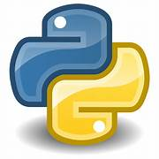
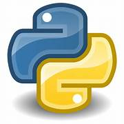

ABOUT
My name is Shaik Mansoor.I was born and brought up in podili.However,I presently stay in Hyderabad.My highest degree is a full time B.Tech/B.E. in Computers from SaGI Ramakrishnam Raju Engineering College,Bhimvaram,that I completed in Jun-2024. and I am an All rounder. My Computers degree has given a range of skills that feel are crucial for my career and life .Despite limited exposure.i have understoond that hard work and determination can make anything possible .I am ready to do that.Also,I am trying to develop a habit of reading current trends and Industry news.I developed strong communication skills and also had the oppurinity to participate and excel in several extracurricular acitivites.Because of these exposures and experiences during my academic years.I have gradually been able to develop effective communication skills.So, I can interact freely within a team. Lastly ,I am a quick learner and believe in learning from my past mistakes.This is a virtues as it can take me ahead in both my professional and personal life.
Education:
B.tech-2014,SRKRintermediate-2018,
sri vivekanda jr college
Strengths:
Decision making skills,Adaptability,
Team Player
Languages known:
English,Hindi,
Telugu
Skills

 

Projects
The objective is to identify each of a large number of black-and-white rectangular pixel displays as one of the 26 capital letters in the English alphabet. The character images were based on 20 different fonts and each letter within these 20 fonts was randomly distorted to produce a file of 20,000 unique stimuli.

this is front end development that deloped for casually but the works was amazing.the technology i have used is html and css.by this simple webpage.I have done their multiple pages are connected with each other.this love purposal the main purpose is to find that is some one love your not.

this is also a simple webpage but it has finshing touch is awesome they are built for coffee shoop website to show case the coffe their are providing to them.its very responsive webpage.they used techonolgy like html and css.
Designing a Deep Learning Based Knee Pain Classification model which aims to classify knee pain caused by osteoarthritis with severity grading using a comprehensive dataset of knee X-ray images annotated with KL grades ranging from Grade 0 (healthy) to Grade 4 (severe), facilitating improved clinical decision-making and patient care in the management of knee osteoarthritis.,